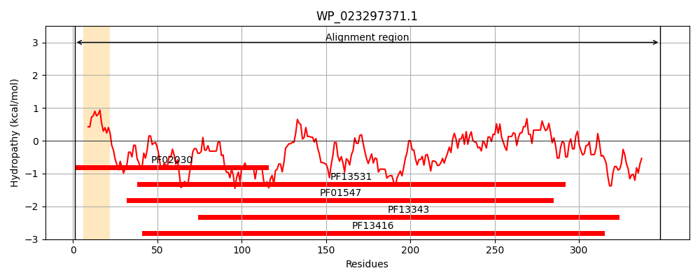
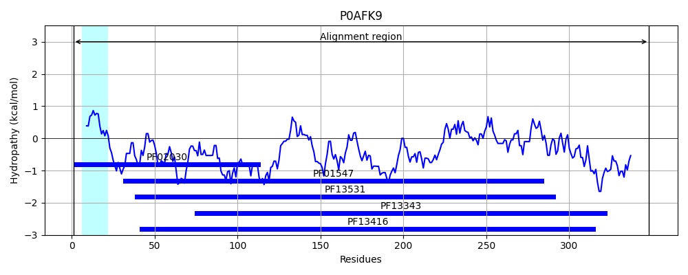
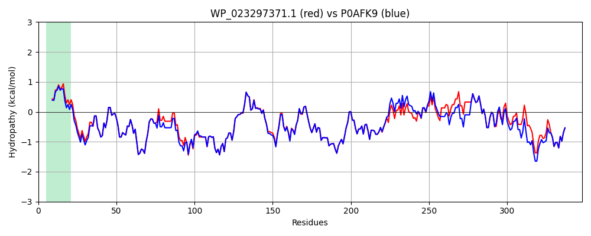

Hit Accession: P0AFK9
Hit TCID: 3.A.1.11.1
Hit Description: gnl|BL_ORD_ID|8829 gnl|TC-DB|P0AFK9|3.A.1.11.1 Spermidine/putrescine-binding periplasmic protein - Escherichia coli.
Mach Len: 348
e:0.000000
Query TMS Count : 1
Hit TMS Count: 1
TMS-Overlap Score: 0.850000
Predicted Substrates:CHEBI:9218;spermidine, CHEBI:8650;putrescine
BLAST Alignment:
Score: 1737 , Bit scores: 673 bits, E-value: 0.0e+00, Alignment length: 348, Percentage identity: 92
Query: 1 MKKWSRHLLAAGALAIGMSAAHADDSKTLYFYNWTEYVPPGLLEQFTKETGIKVIYSTYESNETMYAKLKTYKDGAYDLVVPSTYFVDKMRKEGMLQKIDKSKLTNFSNLDPQMLNKPFDPNNDYSIPYIWGATAIGVNSDAIDPKTITSWADLWKSEYKSSLLLTDDAREVFQMALRKLGYSGNTTDPKEIEAAYNELKKLMPNVAAFNSDNPANPYMEGEVNLGMVWNGSAYVARQAGTPLEVIWPKEGGIFWMDSLSIPANAKNVDGALKLINFLLRPDVAKQVAETIGYPTPNLAARKMLSPAVANDKSLYPDAATIEKGEWQNDVGSASAIYEEYYQKLKAGR 348
MKKWSRHLLAAGALA+GMSAAHADD+ TLYFYNWTEYVPPGLLEQFTKETGIKVIYSTYESNETMYAKLKTYKDGAYDLVVPSTY+VDKMRKEGM+QKIDKSKLTNFSNLDP MLNKPFDPNNDYSIPYIWGATAIGVN DA+DPK++TSWADLWK EYK SLLLTDDAREVFQMALRKLGYSGNTTDPKEIEAAYNELKKLMPNVAAFNSDNPANPYMEGEVNLGM+WNGSA+VARQAGTP++V+WPKEGGIFWMDSL+IPANAKN +GALKLINFLLRPDVAKQVAETIGYPTPNLAARK+LSP VANDK+LYPDA TI+ GEWQNDVG+AS+IYEEYYQKLKAGR
Sbjct: 1 MKKWSRHLLAAGALALGMSAAHADDNNTLYFYNWTEYVPPGLLEQFTKETGIKVIYSTYESNETMYAKLKTYKDGAYDLVVPSTYYVDKMRKEGMIQKIDKSKLTNFSNLDPDMLNKPFDPNNDYSIPYIWGATAIGVNGDAVDPKSVTSWADLWKPEYKGSLLLTDDAREVFQMALRKLGYSGNTTDPKEIEAAYNELKKLMPNVAAFNSDNPANPYMEGEVNLGMIWNGSAFVARQAGTPIDVVWPKEGGIFWMDSLAIPANAKNKEGALKLINFLLRPDVAKQVAETIGYPTPNLAARKLLSPEVANDKTLYPDAETIKNGEWQNDVGAASSIYEEYYQKLKAGR 348 | Protein Hydropathy Plots: |
|---|
|  |  |
Pairwise Alignment-Hydropathy Plot:
|
|---|
|  |